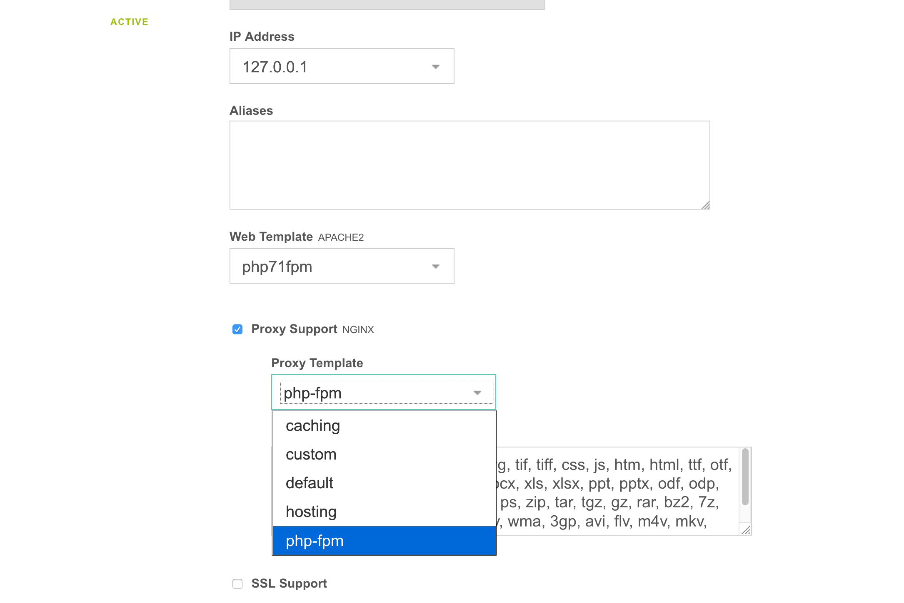

The ultimate control panel with docker (thanks lagun4ik for a great start)
What's included?
ubuntu 16.04 lts + Vesta 0.9.8-25
nginx (proxy) -> apache2 -> php-fcgi - high performance and flexible implementation
ssh/sftp, letsencrypt, memcached, redis, MariaDB 10.2, postgresql 9.6, nodejs 12.x, golang 1.15.x, openvpn, mongodb, couchdb, .net core 3.1
folder redirection for data persistence and automatic daily backup provided by VestaCP
DNS, named, dovecot/roundcube, spamassassin, clamav, etc... -- disabled by default
vesta panel SSL (LE-issued) for mail and control panel - provide $HOSTNAME environment variable
added ability to also run php-fpm 
Run this image:
mkdir -p /opt/vestacp/{vesta,home,backup}docker run -d --restart=always \-p 3322:22 -p 80:80 -p 443:443 -p 9088:8083 \-v /opt/vestacp/vesta:/vesta -v /opt/vestacp/home:/home -v /opt/vestacp/backup:/backup \niiknow/vestacp
/vesta -- configurations
/home -- users data
/backup -- users backup
Login: admin
To get the password, run
sudo
docker exec $CONTAINER_ID cat /vesta-start/root/password.txt
Alternatively, you can change the password with:
sudo docker exec $CONTAINER_ID /usr/local/vesta/bin/v-change-user-password admin YOURNEWPASSWORDFTP was not installed on purpose because it's not secure. Use SFTP instead on the 3322 port. Disable ssh if you don't really need it and use the Vesta FileManager plugin. Also, make sure you change the user shell in the Vesta panel in order to use ssh.
redirected customizable config folders to /vesta, exclude /home. Home has been setup to be it's own volume. Do not try to redirect the home folder. It's like opening a big can of worms. There are all kind of breaking issues with having home as a symbolic link: Vesta FileManager breaking, Apache and Nginx breaking, SSL breaking, and so on...
Use incrond to watch /etc/{passwd,shadow,gshadow,group} and sync to /backup/.etc so remember to attach the backup volume if you want to save password across restart.
AWS CLI has been installed to simplify your backup lifestyle. You just need to setup a cron on VestaCP.
Update index.html to remove reference to VestaCP from default site for security.
Dovecot/roundcube email, and DNS services are disabled by default. Look at /home/admin/bin/my-startup.sh for instruction on how to re-enable these services. Remember to restart your container after updating my-startup.sh.
Replace phpmyadmin and phppgadmin with adminer.
ssh/sftp, nginx, apache2, php7.3+ & v8js
log viewing in Vesta
backup and restore
Vesta FileManager
Letsencrypt
Sending/outgoing email, dovecot
adminer
Redis, Memcached
nodejs, golang
MariaDB/MySQL, PostgreSql, Mongodb
add incron to monitor and immediately backup /etc/{passwd,shadow,gshadow,group}
nginx pagespeed module
redirect awstats
multiple php{7.3,7.4,8.0} fcgi and fpm templates
I recommend the following:
Since this is Docker, you can run as many services as you want but only expose request port.
Change the default/initial admin password for security purpose.
Instead of using the admin acccount, consider creating a different/separate credentials for different website/service. This will make it easier for backup and recovery; especially, when you need to move the user to a different installation.
If you use this Docker for hosting and allow your user to login, I also recommend installing maldetect on the docker host to scan the /home volume.
Enjoy!!!
http {...geoip2 /etc/nginx/geoip2/GeoLite2-Country.mmdb {auto_reload 5m;$geoip2_country_code default=US source=$remote_addr country iso_code;}...map $geoip2_country_code $allowed_country {default yes;FK no;FM no;EH no;}}server {...if ($allowed_country = no) {return 444;}...}
1.10.0 - add php8.0, remove php7.2, default php7.4. It is suggest that you start this like migrating server: backup and restore individual user.
1.9.3 - fix build and prep for php8.0
1.9.1 - build update for nginx 1.18.0, GoLang 1.14.3, nodejs 12, and phpv8js for php7.4
1.9.0 - remove php7.1 and add php7.4, update to GoLang 1.13.5 and dotnet 3.1
1.8.5 - build update for Vesta 0.9.8-25 and nginx 1.16.1
1.8.0 - replace phpmyadmin and phppgadmin with adminer.
1.6.0 - Add wordpress support. Fix MongoDB weird build issue. Python 3.7, DotNetCore 2.2, GoLang 1.12.5, and update postgis-2.4 to postgis-2.5
1.5.2 - with php7.3 support.